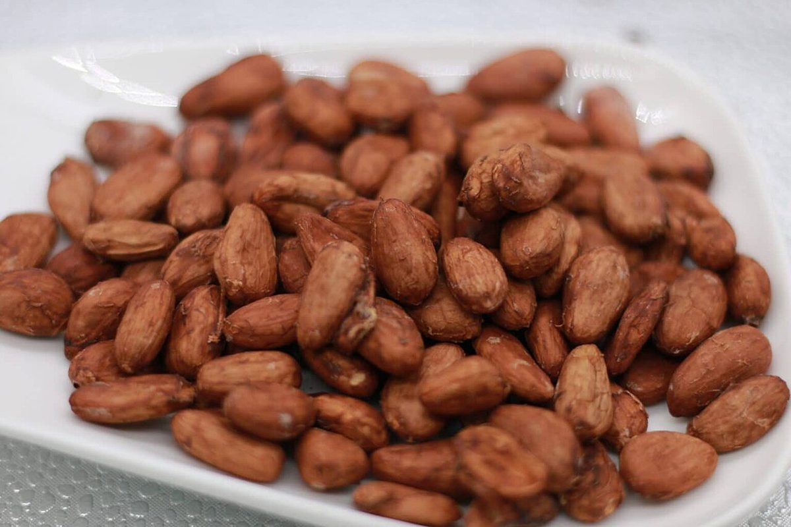
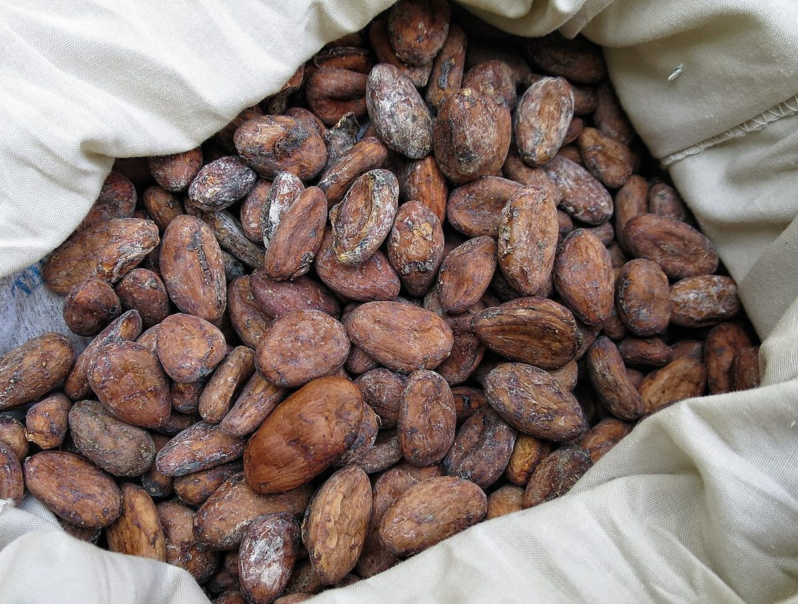
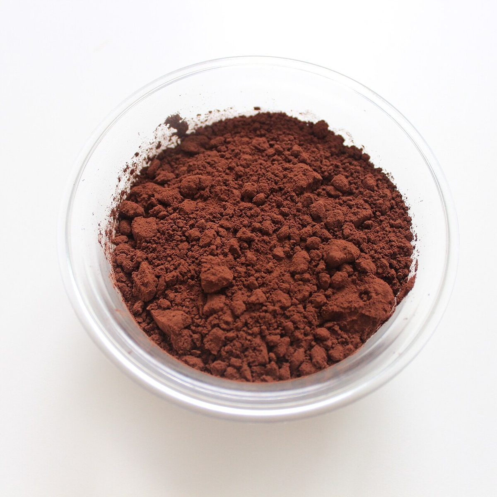
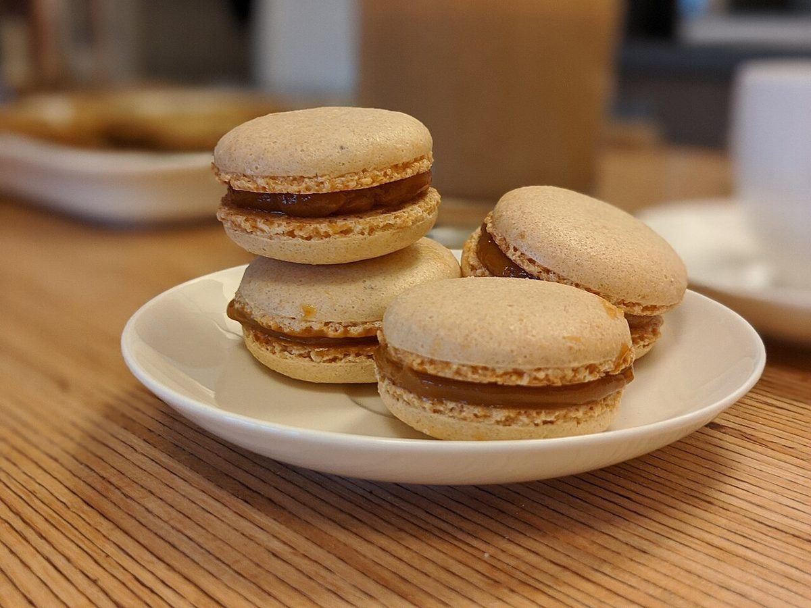
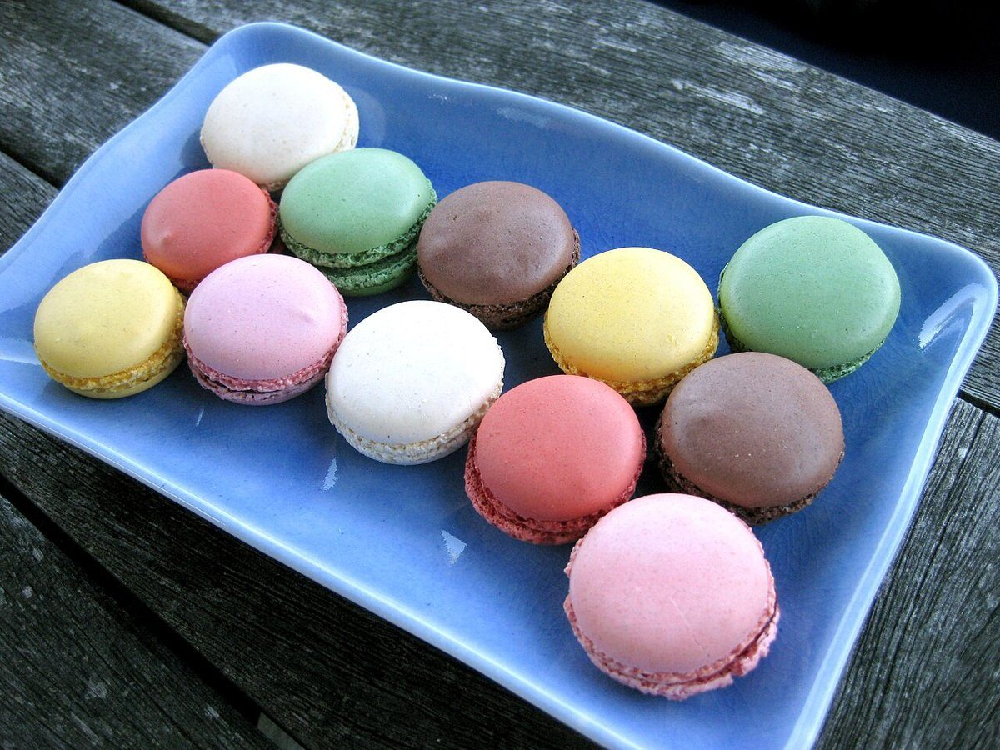
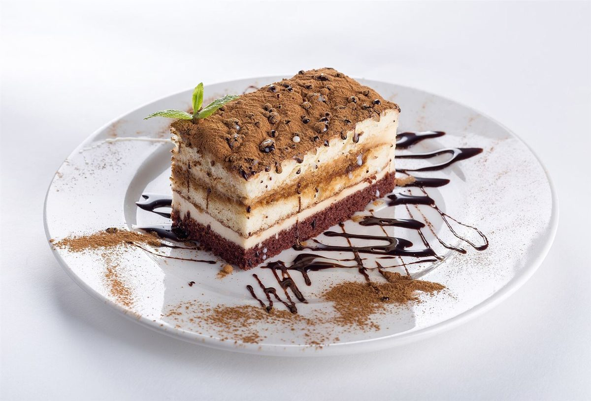
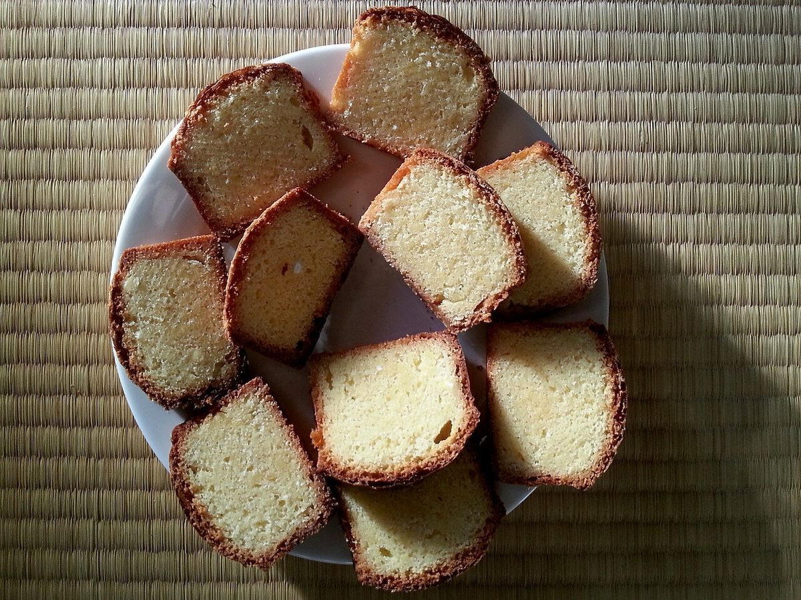
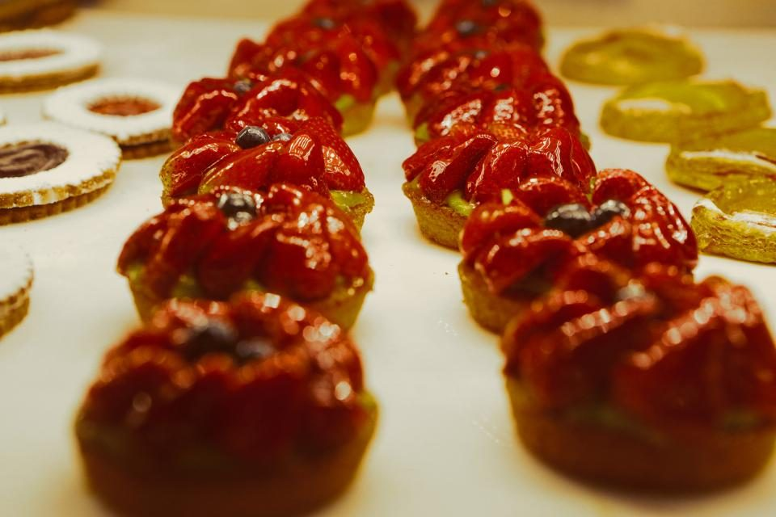

北海道千歳市・チョコレート専門店
素材と向き合い、
日常に上質なショコラを。
北海道の素材を生かしたボンボンショコラと焼き菓子で、観光で訪れる人にも、地元の人にも。千歳の街に根ざした新しいショコラの時間を。
お店の由来と想い
空港のある街で、毎日のそばにあるショコラへ。
Sweet Shop togoは、2026年5月22日に千歳市信濃にグランドオープンしたチョコレート専門店です。オーナーは松田詢吾さん。京都出身で、製菓を学んだのち、ベルギーのショコラトリーで4年半修業し、ワールドチョコレートマスターズのベルギー代表にも選ばれました。2026年3月にはベルギーのチョコレートメーカー「カレボー」の公式チョコレートアンバサダーに就任しています。
新千歳空港を擁し、観光客が多く訪れる千歳市。そこで、観光の方だけでなく地元の人にも「日常の中で上質なチョコレートを楽しんでほしい」という思いから開業したと紹介されています。
情報源: PR TIMES(開業のお知らせ)/STRAIGHT PRESS/Instagram
店名「togo」の意味は公表情報で確認できなかったため、ここでは触れていません。見出しの言い回しなど、上記の事実以外は制作側の表現です。

ショコラのイメージ
カカオから、ひと粒の楽しみまで。






口コミ(イメージ例)
こんなふうに楽しんでもらえたら。
以下は制作側が作成したイメージ例で、実在のお客様の声ではありません。
チョコレートの香りがふわっとして、お土産を選ぶ時間まで楽しくなりました。
ご近所にこんなショコラのお店があるのは嬉しい。ちょっとしたご褒美にまた寄りたいです。
焼き菓子の詰め合わせを手土産にしたら、喜ばれました。
アクセス
お店のこと(確認できたものだけ)
| 所在地 | 〒066-0038 北海道千歳市信濃１丁目６−１０ |
|---|---|
| 電話 | 準備中 |
| 営業時間 | 準備中 |
| 定休日 | 準備中 |
| SNS | Instagram @sweetshop_togo |
営業時間・価格・取り扱いは変更されることがあります。最新情報はInstagramをご確認ください。